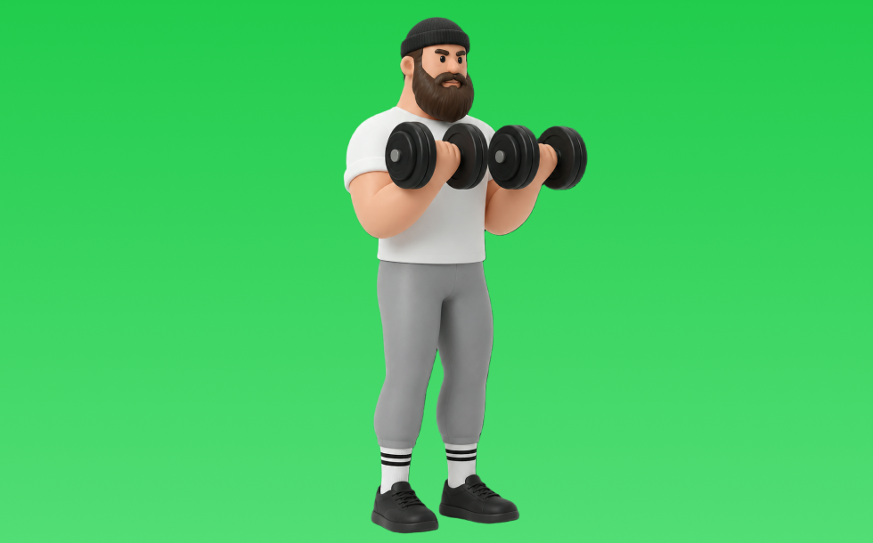

ダンベルカール

ダンベルカールとは、ダンベルを使って立位で「肘を曲げる」動作で腕（上腕二頭筋）、前腕を鍛える種目です。可動域が広く、左右のバランスを整えやすいのが特徴で、肘を体側に固定し、反動を抑えて持ち上げてゆっくり下ろす動作を繰り返します。腕の太さづくりや引く力の補強が期待できます。
- 対象部位
- 腕
- 器具
- ダンベル
- 記録形式
- 重量・回数
- 別名
- db curl / オルタネイトカール
YouTube動画
-
【腕トレ解説】腕が確実に太くなるダンベルカールの正しいやり方
-
【筋トレ】筋トレ歴35年の山本義徳がお勧めするダンベルカールのやり方がこれです！
-
ダンベルカールで上腕二頭筋に確実に効く練習法！集中的に負荷をかけるフォームを解説＆実演
-
【知らないと損】アームカールの正しいやり方で上腕二頭筋を確実に追い込む方法
-
どのアームカールがベストか？この方法なら普通の１種目で十分上腕二頭筋は太くなる！
-
あの横川尚隆もやっている流行りのワンハンドダンベルカールについてボディビルダージュラシック木澤が解説！
-
アームカール（ダンベルカール）の効果的なやり方｜腕を鍛える3つのポイント
-
【筋トレ解説】誰でも腕が太くなるインクラインダンベルカールのやり方を徹底解説します
-
やれば必ずデカくなる上腕二頭筋最強種目解説！！横川尚隆×ジュラシック木澤
-
【力こぶを作る筋トレ】インクラインダンベルカールのやり方・コツ・注意点！上腕二頭筋のストレッチ種目です◎
-
【上腕二頭筋】カッコいい腕を作るならコレだ！インクラインアームカールのやり方解説！
-
上腕二頭筋を鍛えて引き締まった腕を手に入れる！「ダンベルカール」の正しいやり方【10回×3セット】
-
【筋トレ】太い力こぶをつくるバーベルアームカールのやり方解説！【上腕二頭筋】
-
【ダンベル買ったらコレやるべし】ダンベル定番トレーニングBEST10
-
このアームカールやってる人は今すぐ止めろ！時間の無駄になるフォームと効きまくるフォームを徹底解説します
-
【それNGです】ダンベル・バーベルカール：５つのエラー動作と改善方法【筋トレ】
YouTubeショート
-
【ダンベル】腕トレ４選 #筋肉
-
二頭筋を上手に作るアームカールの3つの簡単な方法 #上腕二頭筋 #筋トレ #自宅トレーニング
-
【宅トレ】ダンベルカールよくあるミス #腕トレ #ダンベルカール
-
持田選手にワンハンドアームカールについてレクチャーしていてもらいました！次はどの種目の解説をやってほしいかコメントしてね！#筋トレ #volix #トレーニング #fitness #workout
-
上腕二頭筋のおすすめ種目3つを紹介【筋トレ】
-
正しいダンベルカールのやり方
-
【よくある間違いインクラインダンベルカール】 #ダイエット #筋トレ #新座市 #志木市 #朝霞市 #インクラインダンベルカール
-
みなさんはワンハンドダンベルカールやってますか？持田選手とこんがりさんが上腕二頭筋に効くトレーニングをレクチャーしてくれました！#筋トレ #volix #腕トレ #ちょこっと惜しい #上腕二頭筋
-
上腕二頭筋を太くする！インクラインダンベルカール 初心者でも挑戦しやすい腕トレ #筋トレ #腕トレ #アームカール #インクラインダンベルカール #ウエイトトレーニング #上腕二頭筋トレ
-
【腕トレ】インクラインダンベルカールのやり方解説
-
持田選手にアームカールのスーパーセットについてレクチャーしていてもらいました！次はどの種目の解説をやってほしいかコメントしてね！#筋トレ #volix #トレーニング #fitness #持田教利
-
コンセントレーションカールの正しいやり方 | ボディビル日本チャンピオンが解説 #shorts【ビーレジェンド プロテイン】
-
5kgのダンベルで自宅で5分！バキバキの前腕を作る筋トレ！#shorts #筋トレ #fitness
-
ダンベルカールと、バーベルカールのコンパウンドセットでやった上腕二頭筋トレーニング #筋トレ #筋肉 #トレーニング #腕トレーニング
-
こんなバーベルカールはやめろ！正しいフォーム解説 #筋トレ
-
胸トレのやり方🔥〜ダンベルプレス基礎編〜 #筋トレ #筋肉 #筋肉社長 #胸トレ
-
効果がないハンマーカール #筋トレ
-
キックバックのやり方#初心者 #ジム #ダンベル
-
正しいダンベルロウ4つのポイント #筋トレ
-
【ハンマーカール正しいやり方】○理想と○間違い #ボディメイク #プロテイン #仙台 #仙台パーソナルジム #ビフォーアフター #ジム初心者 #automobile
-
【短時間】自宅でもできる5kgのダンベルのみで腕を太くするトレーニング #shorts #筋トレ #ボディメイク #腕トレ
-
腕を太くする為にやるべき種目を伝授。#shorts
-
正しいダンベルベンチプレス5つのポイント 【筋トレ】
-
前腕を太くする方法 #筋トレ #トレーニング #ホームトレーニング #ホームトレーニー #筋肉 #ボディビル #フィジーク
-
マッチョってダンベル何キロまで持てる？#shorts #筋トレ #ダンベル何キロ持てる
-
#筋力トレーニング#ダンベルカール30KG#気合いチャンネル【浜口京子】
-
【筋トレ初心者必見 | ダンベルカールのやり方】日本人初ミスター・オリンピアに出場した、山岸プロが解説！ #山岸秀匡 #筋トレ初心者 #インクラインダンベルカール 横型バージョンはコメ欄から!
-
【腕トレ解説】インクライン・ハンマーカール #筋トレ解説 #腕トレ #腕トレーニング
-
このアームカールはやめろ！#shorts
-
正しいサイドレイズ4つのポイント #筋トレ
動作方法
- 肘の位置を固定して構える
- 肘を軸にして持ち上げる
- ゆっくり下ろして負荷を保つ
動作ポイント
- 肘を前後に振りすぎない
- 手首を反らしすぎない
ワンポイントアドバイス
- 肘の位置を固定すると狙った部位に効きやすい
- 回数を急がず、下ろし動作を丁寧に行う
目的別回数設定
目的や体力に応じた一般的な目安です。無理のない範囲で調整してください。
- 筋力アップ
- 1〜5回
- 筋肥大
- 6〜12回
- 持久力アップ
- 13〜20回
YouTube動画について
動画はYouTubeの公開情報をもとに表示しています。内容は投稿者によるもので、Biggrによる監修ではありません。
アプリを入手
筋トレやトレーニングの記録はBiggrにお任せください。今すぐ無料で使い始められます。